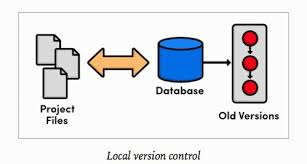

Un control de versiones es un sistema que registra los cambios realizados en un archivo o conjunto de archivos a lo largo del tiempo, de modo que puedas recuperar versiones específicas más adelante. Aunque en los ejemplos de este libro usarás archivos de código fuente como aquellos cuya versión está siendo controlada, en realidad puedes hacer lo mismo con casi cualquier tipo de archivo que encuentres en una computadora.
El control de versiones se realiza principalmente en la industria informática para controlar las distintas versiones del código fuente dando lugar a los sistemas de control de código fuente o SCM (siglas del inglés Source Code Management). Sin embargo, los mismos conceptos son aplicables a otros ámbitos como documentos, imágenes, sitios web, etc.
Los sistemas de control de versiones locales en vez de mantener las versiones como archivos independientes, los almacenaban en una base de datos. Un método de control de versiones, usado por muchas personas, es copiar los archivos a otro directorio. Este método es muy común porque es muy sencillo, pero también es tremendamente propenso a errores
Cuando era necesario revisar una versión anterior del proyecto se usaba el sistema de control de versiones en vez de acceder directamente al archivo, de esta manera en cualquier momento solo se tenia una copia del proyecto, eliminando la posibilidad de confundir o eliminar versiones. En este punto el control de versiones se llevaba a cabo en el computador de cada uno de los desarrolladores y no existía una manera eficiente de compartir el código entre ellos.
Para facilitar la colaboración de múltiples desarrolladores en un solo proyecto los sistemas de control de versiones evolucionaron: en vez de almacenar los cambios y versiones en el disco duro de los desarrolladores, estos se almacenaban en un servidor.
En un sistema de control de versiones centralizado todos nuestros fuentes y sus versiones están almacenados en un único directorio (llamado repositorio de fuentes) de un ordenador (un servidor). Todos los desarrolladores que quieran trabajar con esos fuentes, deben pedirle al sistema de control de versiones una copia local para trabajar. En ella realizan todos sus cambios y cuando están listos y funcionando, le dicen al sistema de control de versiones que guarde los fuentes modificados como una nueva versión.Algunos ejemplos son CVS y subversión.

La siguiente generación de sistemas de control de versiones se alejo de la idea de un solo repositorio centralizado y optó por darle a cada desarrollador una copia local de todo el proyecto, de esta manera se construyo una red distribuida de repositorios, en la que cada desarrollador podía trabajar de manera aislada pero teniendo un mecanismo de resolución de conflictos mucho más elegante que un su versión anterior.
Al no existir un repositorio central, cada desarrollador puede trabajar a su propio ritmo, almacenar los cambios a nivel local y mezclar los conflictos que se presenten solo cuando se requiera. Cómo cada usuario tiene una copia completa del proyecto el riesgo por una caída del servidor, un repositorio dañado o cualquier otro tipo de perdida de datos es mucho menor que en cualquiera de sus predecesores.

Todos los sistemas de control de versiones se basan en disponer de un repositorio, que es el conjunto de información gestionada por el sistema. Este repositorio contiene el historial de versiones de todos los elementos gestionados.
Cada uno de los usuarios puede crearse una copia local duplicando el contenido del repositorio para permitir su uso. Es posible duplicar la última versión o cualquier versión almacenada en el historial. Este proceso se suele conocer como checkout o desproteger.
Para poder realizar un cambio es necesario marcar en el repositorio el elemento que se desea modificar y el sistema se encargará de impedir que otro usuario pueda modificar dicho elemento.
En el que cada usuario se descarga la copia, la modifica, y el sistema automáticamente combina las diversas modificaciones.
Un sistema de control de versiones debe proporcionar:
Mecanismo de almacenamiento de los elementos que deba gestionar (ej. archivos de texto, imágenes, documentación...).
Posibilidad de realizar cambios sobre los elementos almacenados (ej. modificaciones parciales, añadir, borrar).
Registro histórico de las acciones realizadas con cada elemento o conjunto de elementos.
1.Un completo historial de cambios a largo plazo de todos los archivos: Esto quiere decir todos los cambios realizados por muchas personas a lo largo de los años. Los cambios incluyen la creación y la eliminación de los archivos, así como los cambios de sus contenidos.
2.Creación de ramas y fusiones: Si se tiene a miembros del equipo trabajando al mismo tiempo, es algo evidente; pero incluso las personas que trabajan solas pueden beneficiarse de la capacidad de trabajar en flujos independientes de cambios. La creación de una "rama" en las herramientas de VCS mantiene múltiples flujos de trabajo independientes los unos de los otros al tiempo que ofrece la facilidad de volver a fusionar ese trabajo, lo que permite que los desarrolladores verifiquen que los cambios de cada rama no entran en conflicto.
3.Trazabilidad: Ser capaz de trazar cada cambio que se hace en el software y conectarlo con un software de gestión de proyectos y seguimiento de errores como Jira, además de ser capaz de anotar cada cambio con un mensaje que describa el propósito y el objetivo del cambio, no solo te ayuda con el análisis de la causa raíz y la recopilación de información.
1.Visita la página de descargas GitHub Desktop .
Haz click aqui2.Escoge Download for Windows (Descargar para Windows).
3.En la carpeta Download (Descargas) de tu computadora, haz doble clic en GitHub Desktop.
4.En la ventana emergente, haz clic en Install (Instalar).
5.Una vez que el programa haya sido instalado, haz clic en Run (Ejecutar).